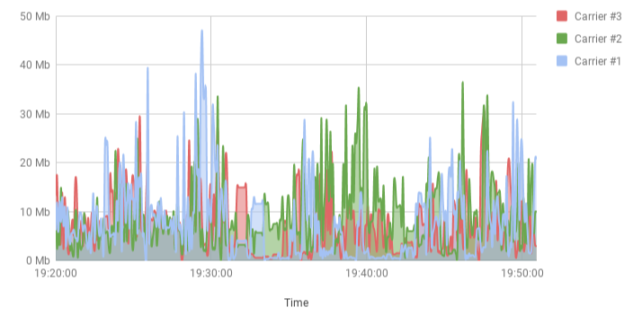
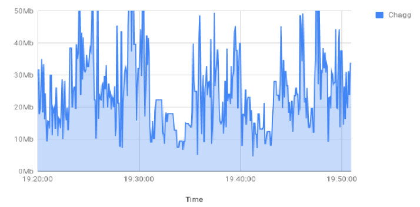
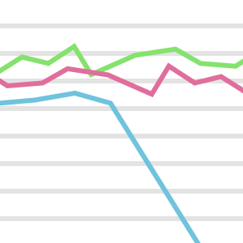
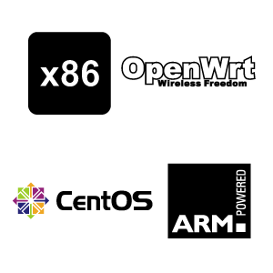
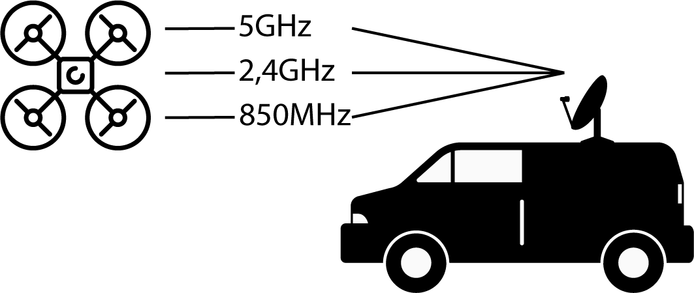
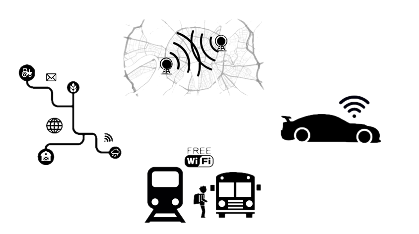
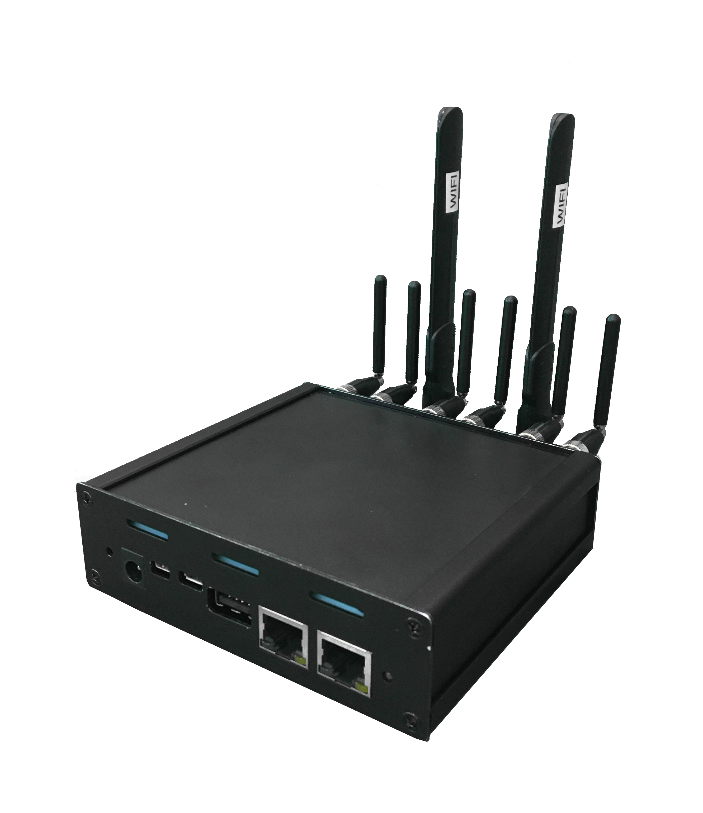

QOOLLO has developed a software solution for vehicle advanced connectivity by means of smart aggregation of multiple wireless network technologies (network bonding of LTE, 3G, WiFi).
Today we can not live without online technologies. Wherever you go, whatever you do, Chagg will ensure best possible connection. Maximum bandwidth and speed are guaranteed when using our device.
Just power on and you good to go.
What traffic could be aggregated

The example of the aggregation system installed in moving vehicle in an urban environment

3 channel bonded by
Max Speed, Mbit/s
Average, Mbit/s
CHAGG
Best of mobile operators*
* According to own research in the territory of EU
Features
Low performance footprint
Can run on power efficient hardware with low footprint on jitter and throughput

Fast response on network changes
If underlying networks' parameters are changing the reaction will be in couple seconds

Portable
We use Rust as programming language which supplies high portability and efficiency. Binaries are already available for x86, ARM and supports CentOS, OpenWRT.
Chagg for P2P connections
The technology can serve for any wired and wireless data networks. Including for P2P communication systems in robotic systems
for increasing fault tolerance, performance and reliability of communication.

Chagg for LTE networks
Chagg can be useful in various everyday scenarios and more. Our solution can be applied to completely different use cases. With chagg you get: small dimensions and low power consumption and low latency for web conferencing and VoIP.
Use cases
- M2M. Requires guaranteed connectivity & High volume of data
- Long range distance trips. Reliable high speed connection to the internet & Connection quality depends on location
- Domestic transportation. Better quality of service by diversity
- Luxury cars. Exceptional wireless service


How does it work?
Chagg 4UL - is a single virtual network channel at the packet level over multiple cellular networks.Like most WMT (Wireless Multiplex Technology) systems - Chagg 4UL is available for Internet access. Chagg 4UL uses the binded bandwidth of all modems together providing enormous upload speeds. The device also supports full databinding across all connections and is available via the Wi-Fi hotspot or via the Ethernet connection. We work with modems using 3G (UMTS), EDGE, GPRS, GSM, HSPA+, LTE. And with any IP channels (WiFi, Ethernet, Fiber optic, radio …).